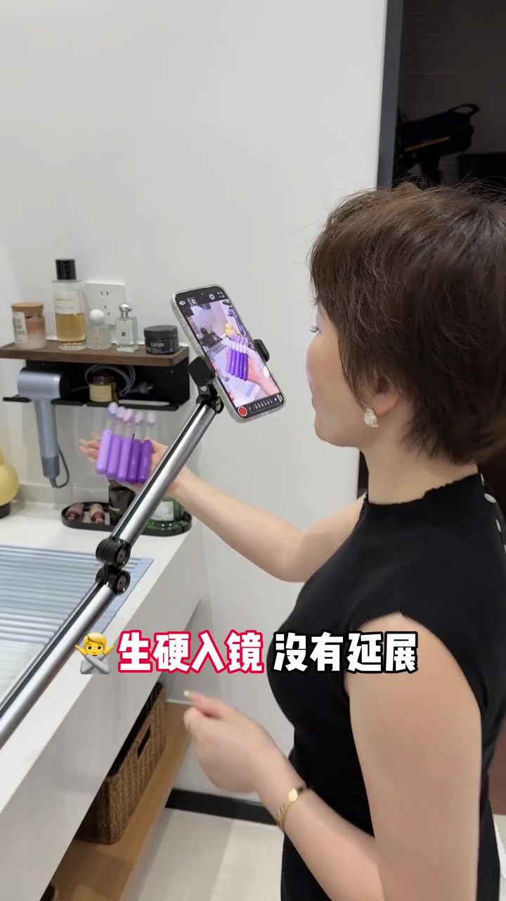
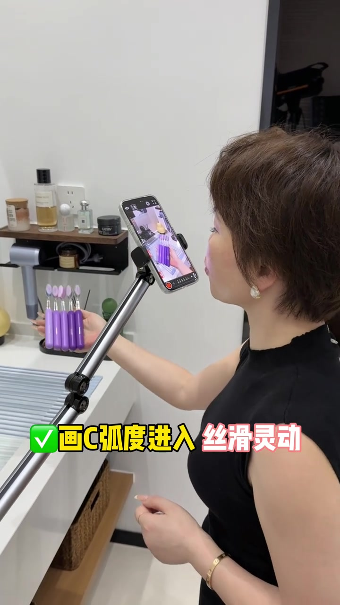
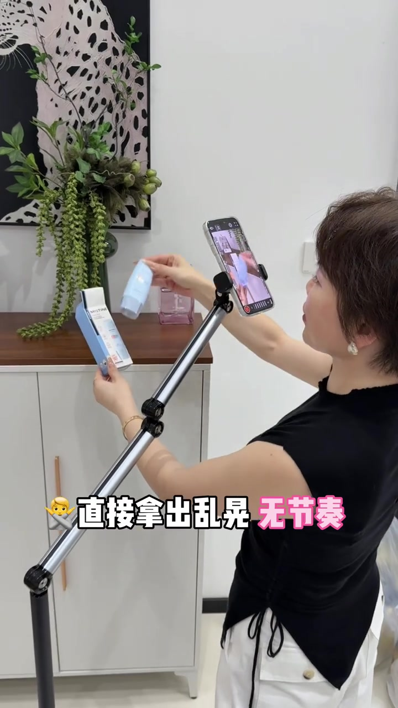
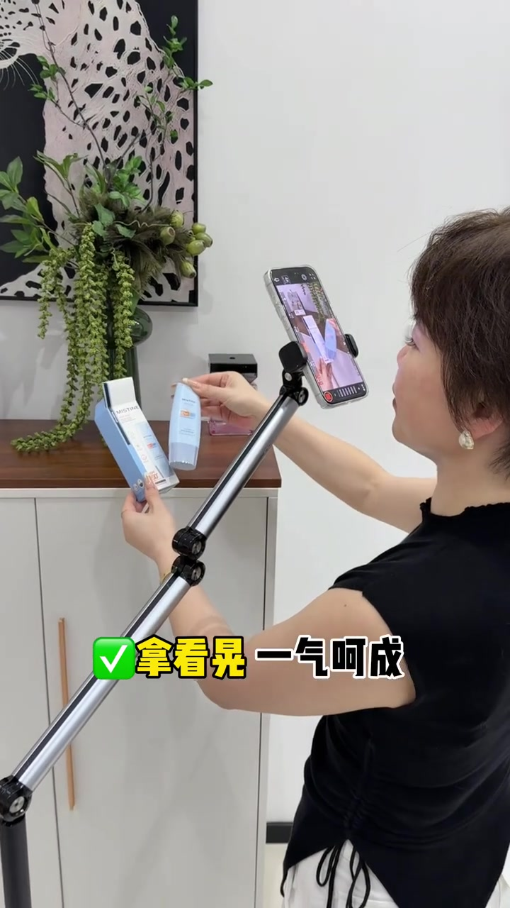
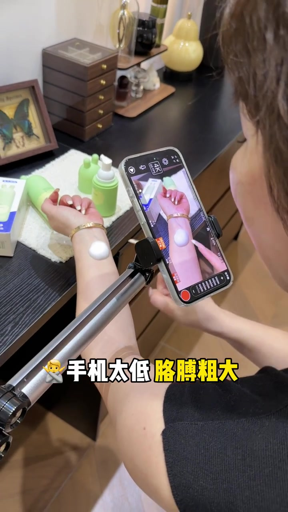
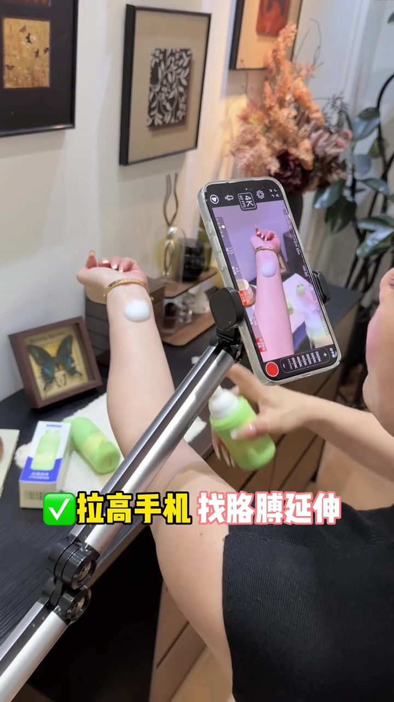
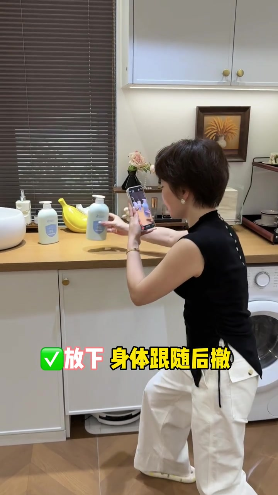
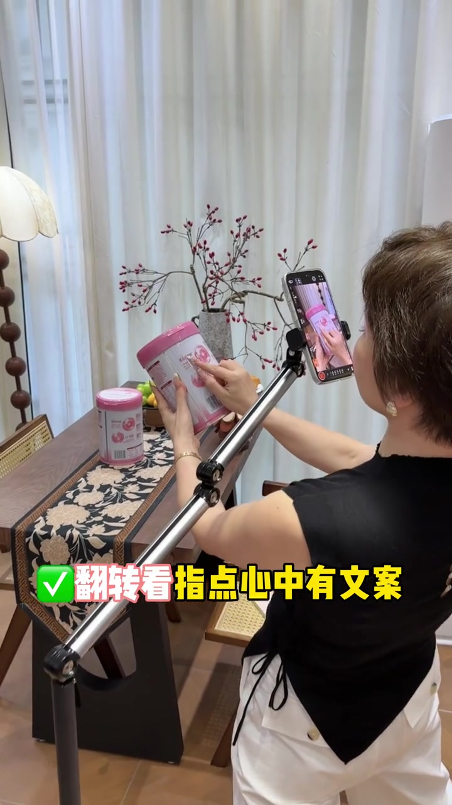

开场就纠「生硬入镜」：要有弧度延展
创作者在浴室台面示范桌拍入镜。错误示范里，手机支架直线推进，画面字幕直接打出「生硬入镜 没有延展」；口播也在否定这种穿入方式。
画面字幕：「🙅 生硬入镜 没有延展」→「✅ 画C弧度进入 丝滑灵动」
说明：Whisper 把「视频的穿入 / 弧度穿入」误识为「生命的闯路 / 活动闯路」。下文以可见字幕与运镜画面为准；末尾转录区仍保留原始分段。


拿货展示别「直接拿出乱晃」
场景切到柜前，演示 Mistine 防晒一类小盒。错误动作是拿出来就左右乱晃，字幕写「直接拿出乱晃 无节奏」；正确做法是拿稳后连贯晃动，字幕改成「拿着晃 一气呵成」。
画面字幕：「🙅 直接拿出乱晃 无节奏」→「✅ 拿着晃 一气呵成」


上手涂抹：手机太低会把胳膊拍粗
桌面特写转到涂抹演示：前臂上挤出白色乳霜。低机位侧拍会压缩透视，字幕警告「手机太低 胳膊粗大」；随后她拉高手机，俯拍找胳膊线条，字幕改为「拉高手机 找胳膊延伸」。
画面字幕：「🙅 手机太低 胳膊粗大」→「✅ 拉高手机 找胳膊延伸」
口播大意是：上手展示时别把手臂拍得粗大，要抬高手机，再找延伸感。Whisper 把「胳膊」误成「画面」，转录区原样保留。


放货别「直接放」：身体要跟随后撤
厨房台面段落示范如何把瓶身放入画面。错误是手持手机直接怼近放下，字幕「直接放 生硬」；正确是放下的同时身体后撤，镜头随之拉开，字幕「放下 身体跟随后撤」。
画面字幕：「🙅 直接放 生硬」→「✅ 放下 身体跟随后撤」

瓶瓶罐罐：别颠来颠去，要翻转运镜
浴室洗手台段落拿起 LUX 等瓶身。错误示范是原地颠来颠去，字幕「直接颠来颠去」；正确是配合翻转运镜拍，字幕「翻转运镜拍 更有节奏」。口播提到要把产品翻过来看，Whisper 将「瓶瓶罐罐 / 灵动」误识成「平平挂挂 / 领弄」。
画面字幕：「🙅 直接颠来颠去」→「✅ 翻转运镜拍 更有节奏」
指卖点：先翻转看，指点时心中有文案
最后一组是粉色罐装产品背标特写。错误是无节奏瞎指点；正确是先翻转看标签，再有节奏地点到卖点，字幕写「翻转看 指点心中有文案」。成片分镜头还打出「甄选燕窝酸」等背标文字，示意指点要对应话术。
画面字幕：「🙅 瞎指点无节奏」→「✅ 翻转看 指点心中有文案」
Whisper 收尾把「心中有文案」误识为「心中永恒」——叙述按字幕校正，转录区不改原文。
